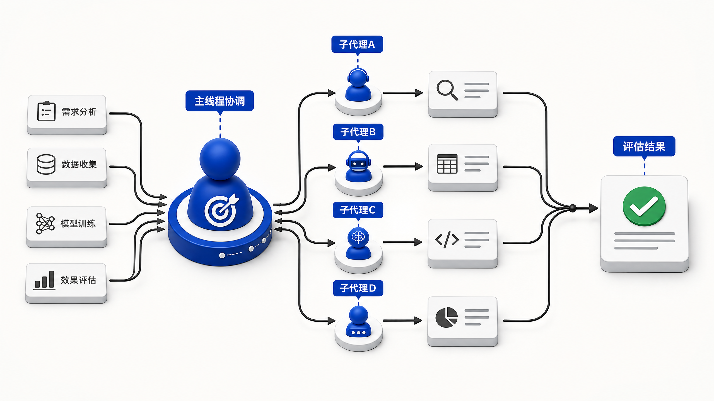
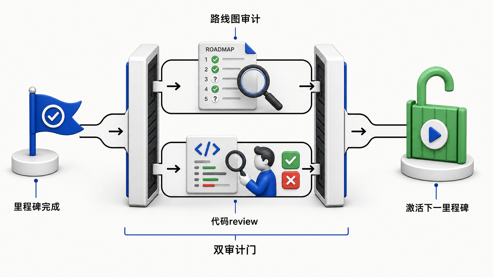
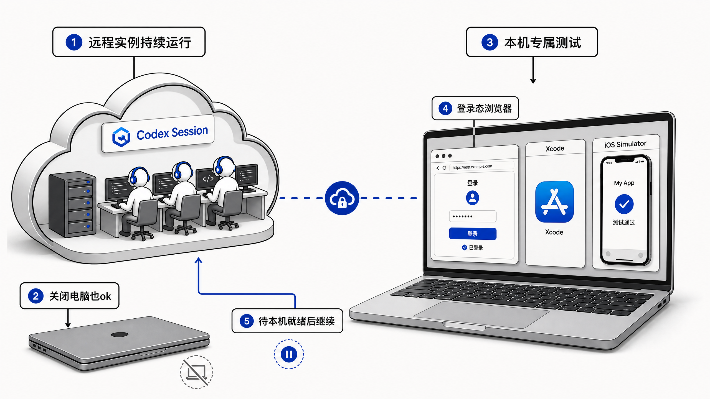
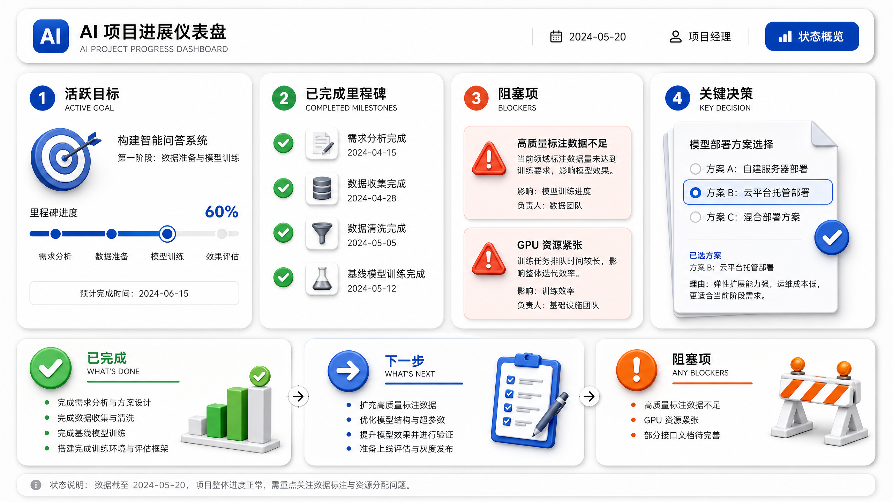
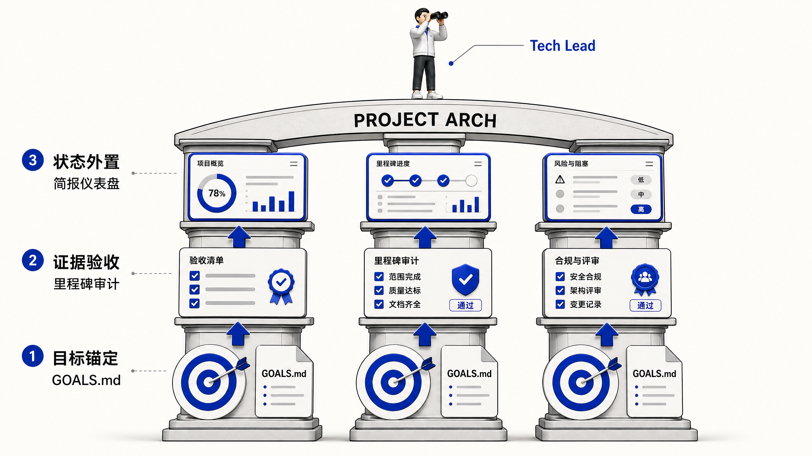
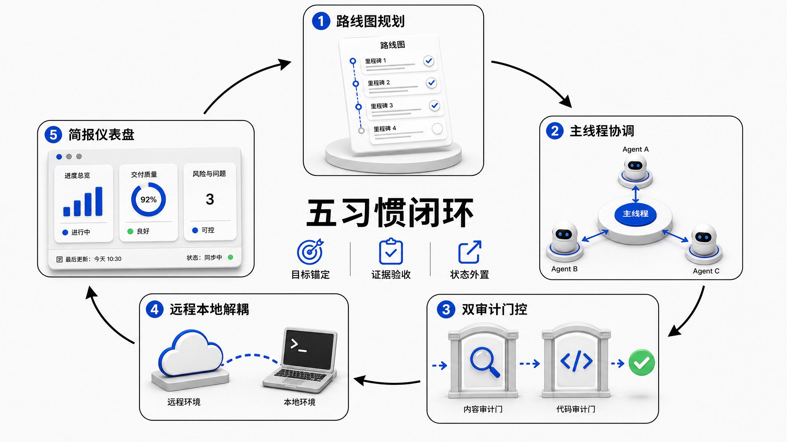

OpenAI Codex 团队 DX 工程师 Gabriel Chua 的实践总结，全网浏览量 89 万。 适配所有支持长任务运行 + 可开启子 agent 的编码工具。
全文围绕一个核心问题展开：AI 能跑数天，但怎么保证它不跑偏？
AI 编码工具已经能连续运行数小时甚至数天——长任务执行能力已落地。 但行业普遍的核心难点并非「启动一个 AI 任务」，而是在多日迭代、持续发现新信息、反复验证的过程中，避免 AI 偏离初始目标。
Gabriel Chua 发布的《Collaborating with Codex on Long-Running Tasks》全网浏览量达 89 万，核心洞察是：这套协作方法不仅适配 Codex，所有支持长任务运行、可开启子 agent 的编码工具（Claude Code、Cursor、Windsurf）都能迁移其核心逻辑。
核心转变：从"放养单个 AI"升级为"带领 AI 团队"——你从执行者变成 Tech Lead。
| 维度 | 当前行业现状 | 本文方法目标 |
|---|---|---|
| 执行能力 | 数小时~数天连续运行 | 相同 |
| 启动任务 | 已解决 | 相同 |
| 多日目标对齐 | 上下文漂移、新信息打偏目标 | GOALS.md 锚定 + 里程碑审计 |
| 协作模式 | 人盯 AI（放养） | 人定目标 + AI 执行 + 分层验收 |
在逐一展开前，先看全貌。五个习惯构成一个往复循环的协作闭环。
核心动作：不用 /plan 开局，先通过对话口述需求 + 给出约束，引导 AI 持续提问，直至生成初版计划。项目成型后，让 AI 将大路线图写入持久文件 GOALS.md。
| 字段 | 内容 | 为什么需要 |
|---|---|---|
| 目标产出 | 这个里程碑要交付什么 | 避免"做完了但不知道做了什么" |
| 当前工作范围 | 做什么、不做什么 | 防止范围蔓延 |
| 重要决策 | 选了什么方案、为什么 | 决策可追溯，不会反复推翻 |
| 已知阻塞 | 卡住的关键依赖 | 提前暴露风险 |
| 完成所需证据 | 怎么证明做完了 | 定义可验收的标准 |
/plan 模式逼你在没充分讨论前就写规格文档，计划容易僵化。先通过对话让 AI 帮你提问、梳理约束，计划自然浮现——更符合真实项目的演进节奏。AI 会持续动态更新 GOALS.md，同一时刻仅保持一个活跃 Goal。
操作要点：早期需求讨论高度灵活，无需提前撰写正式规格文档。Codex 可通过对话梳理出可落地的执行计划，随着项目推进自动维护路线图。
核心动作：主线程（你 + AI 协调者）仅在「目标、约束、决策、状态」四个维度工作。代码实现全部委派给 subagent 或独立 thread。

图 · Hub-Spoke 协调模型——主线程居中调度，执行全部外派给 subagent
| 主线程做 | 主线程不做 |
|---|---|
| 定目标、给约束 | 写代码、改代码 |
| 决定下一步动作 | 调试排错细节 |
| 评估执行结果 | 读大量日志 |
| 验收证据、审计路线 | 纠缠实现语法 |
独立 thread 的作用：需要回溯的工作放在主线程会被后续对话淹没。独立 thread 保留完整历史，主线程保持轻量——两者可并行推进。
核心动作：每完成一个里程碑，不要急着推进。先在独立 thread 对照现状审计路线图，再同步 review 代码。两项审计完成后才激活下一里程碑。

图 · 双审计门控——路线图审计 + 代码 review 并行，两项都过才激活下一里程碑
实际例子：登录流程实现后，通过同步代码 review 顺带发现 token 存储错误、浏览器端验证缺失等隐藏缺陷——这些是远程测试覆盖不到的。
核心动作：远程实例 + 本地设备解耦。涉及登录态浏览器、本地凭据、Xcode、macOS 权限、iOS 模拟器等必须依赖本机环境的检查，由远程协调者创建本地线程承接。

图 · 远程/本地能力解耦——远程实例持续运行，本机仅承接必须本机环境的测试
| 远程实例（云端 Codex） | 本机设备 |
|---|---|
| 积分消耗、长时间任务 | 登录态浏览器测试 |
| 代码生成、文件操作 | 本地凭据 / Keychain |
| API 集成、远程测试 | iOS 模拟器 / Xcode |
| 代码 review、架构设计 | macOS 权限 / TCC 弹窗 |
| 电脑关闭仍继续运行 | 远程修复后可复测 |
没有本地线程能力怎么办？如果你的工具（Cursor、Claude Code 等）不支持远程/本地线程分离，可以将这个习惯降级为：把所有必须本机验证的步骤标记为 BLOCKER，在 GOALS.md 中显式声明，等你在本地手动跑完后将结果回填给 AI 继续推进。核心不变——本机专属的验证不跳过，只是改成交互方式。
核心动作：每次状态更新仅输出三段极简汇报，跨多里程碑项目维护自定义 progress-dashboard.html 仪表盘。

图 · 三段简报 + 仪表盘面板——每小时一次 AI 版站会
跨多里程碑的复杂项目维护一个 progress-dashboard.html，展示：活跃目标（进度条）、已完成里程碑（时间线）、证据、阻塞项（标红）、关键决策（文档链接）。可部署为公开站点，随时远程查看。
五个习惯的底层逻辑收束为三个锚点。理解这三个锚点，就能把整套方法迁移到任何 AI 编码工具。

图 · 三锚点层叠结构——目标锚定为基础、证据验收为关卡、状态外置为输出

图 · 全文总览——5 个习惯形成闭环，3 个锚点贯穿支撑。读到这里再回看这张图，每个节点都有了具体含义。
抽象的流程图不够直观。以下用一个真实场景走一遍——把用户名密码认证升级为 OAuth 2.0，涉及数据库迁移、第三方集成、端到端测试。
| 时间 | 动作 | 用到的习惯 | 关键产出 |
|---|---|---|---|
| Day 1 上午 | 对话口述需求 + 约束（兼容旧用户、不能停服）。AI 持续提问，最终生成 GOALS.md | H1 自主规划 | GOALS.md：4 个里程碑 + 完成定义 |
| Day 1 下午 | 激活 M1（数据模型迁移），委派给 subagent 执行。主线程只等结果 | H2 主线程协调 | M1 PROMPT 下发 |
| Day 2 上午 | M1 返回。审计 5 项：完成定义达标、下一目标合理 → 推进 M2 | H3 里程碑审计 | M1 通过 → Active: M2 |
| Day 2 下午 | M2（OAuth 集成）执行中，subagent 发现原定 token 存储方案与新安全策略冲突 | H3 审计捕获偏差 | 新证据 → 需调整方案 |
| Day 2 晚 | 里程碑审计介入：M1 模型需补 refresh_token 字段。主动回退修正 M1，不硬推 M2 |
H3 审计修正路线 | M1 补丁 → 通过 → M2 继续 |
| Day 3 上午 | M2 完成。M3（测试）启动——登录流程测试需要浏览器登录态，委派给本地线程 | H4 本地线程 | 本地测试通过 |
| Day 3 下午 | M4（文档）完成。查看仪表盘：4/4 里程碑 done、无阻塞 → 项目完成 | H5 简报 + 仪表盘 | dashboard: 100% → 收工 |
这是整套方法最有价值的一刻。如果没有里程碑审计，subagent 发现 token 存储冲突后大概率会自行"绕过"——用一种不安全的临时方案把 M2 做完。三天后你才发现整个认证链路有隐患，需要回退重来。
有了审计机制，这个偏差在 M2 执行中就被捕获——审计判定 M1 的数据模型需要补字段，于是主动回退修正，而不是带着缺陷往前冲。这就是"用证据验收防跳过"的真正含义。
简报同步（Day 2 晚）：Done = M1 模型修正 + M2 OAuth 集成推进中 ｜ Next = M2 完成 → M3 测试 ｜ Blockers = 无（token 方案已修正）
如果没有这套方法会怎样？Day 2 的 token 冲突被 subagent 静默绕过 → Day 3 测试阶段才暴露安全问题 → 回退重做 M1 + M2 → 至少多花 2 天。审计机制把这个代价提前消掉了。
这套协作架构不是万能的，仅当项目同时满足以下三个特征时投入产出比最高：
| 条件 | 说明 |
|---|---|
| ① 持续涌现新信息 | 推进中会不断发现新的事实、约束、机会 |
| ② 多块独立并行工作 | 任务可拆分给多个 subagent 同步推进 |
| ③ 多环境验证证据 | 需要从本地、远程、浏览器等多处取证 |
不满足以上全部条件（比如小修小补、明确的单次任务）→ 这套方法 ROI 不高，直接用传统方式更快。
边界与注意事项：
/goal、/side、本地/远程线程）在其他编码工具需找对应替代，但核心框架完全通用核心结论：AI 模型负责产出智能能力；人类开发者的核心价值是引导这份智能始终锚定统一目标，沿着验证过的证据稳步推进。